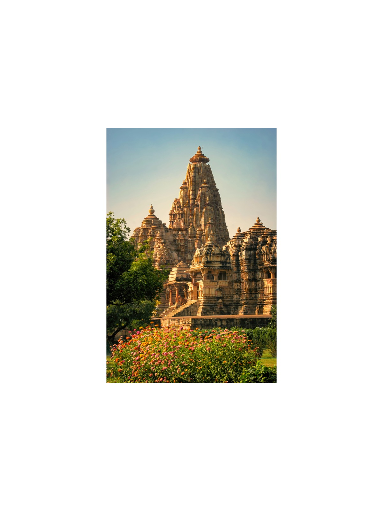

2 дняДели · Каджурахо · Панна · Быстрый темп
2 дня: Каджурахо и Панна — храмы ЮНЕСКО и тигры
Резные храмы Каджурахо и утреннее сафари за тиграми в Панне — в одной чётко спланированной поездке на выходные.
Подробнее →4 дня
Дели · Каджурахо · Панна · Варанаси… · Быстрый темп
4 дня: Каджурахо и Варанаси — храмы, тигры и священный Ганг
Храмы Каджурахо, сафари в Панне и Ганг в Варанаси: от скульптуры до ритуала за четыре дня.
Подробнее → 6 дней
6 днейДели · Джайпур · Абханери · Бхаратпур… · Умеренный темп
6 дней: Золотой треугольник и дикая природа — до Бхаратпура
Золотой треугольник в сочетании с заповедником Кеоладео — для тех, кто хочет увидеть и наследие, и птиц.
Подробнее → 16 дней
16 днейДели · Абханери · Джайпур · Биканер… · Быстрый темп
16 дней: Тадж, тигры и форты — большая одиссея по Раджастану
Шестнадцать дней фортов Раджастана, дюн, тигриных сафари и Тадж-Махала — для тех, кто хочет увидеть всю картину.
Подробнее → 13 дней
13 днейМумбаи · Элефанта · Алибаг · Мурад… · Умеренный темп
13 дней: империи Сахьядри — морские форты, пещерные храмы и метеоритный кратер
Морские форты, цитадель Шиваджи, пещеры Аджанты и Эллоры и метеоритный кратер Лонар — тринадцать дней по Махараштре.
Подробнее →Спланируйте частное путешествие
Расскажите о датах и интересах
Я лично подготовлю программу и расчёт стоимости в течение 24 часов. Никаких групп и шаблонов.